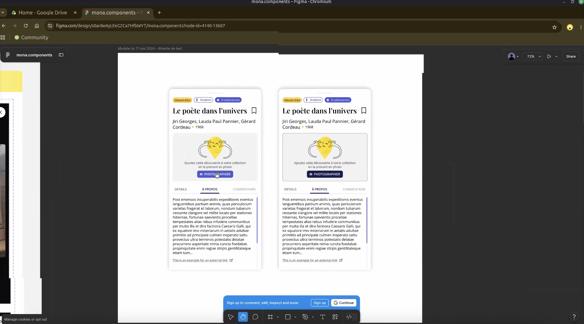
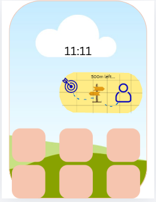
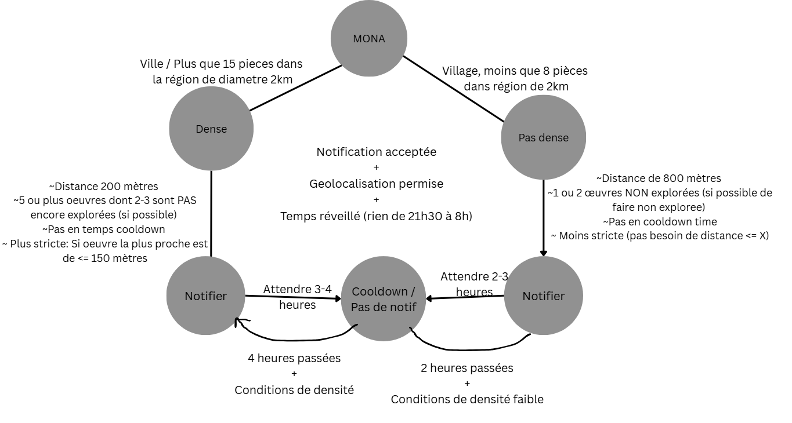
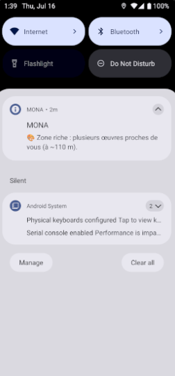
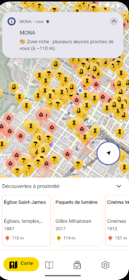
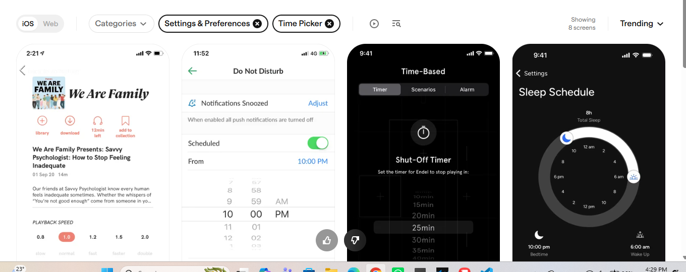
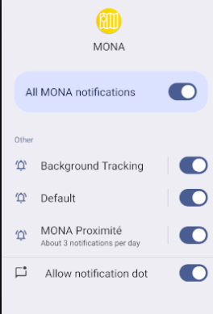
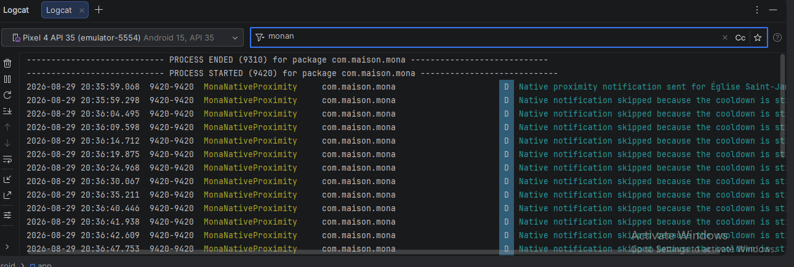

Le projet Mona est une application mobile qui permet de découvrir des oeuvres d'art public à Montréal. L'application utilise la géolocalisation pour permettre à l'utilisateur de découvrir des oeuvres d'art à proximité et de les ajouter à sa collection. En IFT 3150, je travaille comme développeur front-end avec la Maison MONA. En premier, je vais me familiariser avec le code existant et ensuite de travailler avec le reste de l'équipe pour améliorer/embellir l'interface du serveur.
Première rencontre avec Lena et Mariama. On s'est fait connaissance et Lena nous a
présenté Maison MONA et l'application MONA. Je vais travailler sur le côté front end de l'app,
et Mariama va faire plus de travail côté données. J'ai déjà téléchargé l'application et
j'ai pu uploader deux photos d'œuvres d'art public à Montréal. J'ai aussi contacté Christian
pour lui demander de l'aide pour installer le projet sur mon ordinateur, et donc on se rencontre
mercredi en ligne pour qu'il m'aide avec l'installation du code base. J'ai aussi téléchargé
l'application Element pour communiquer avec les autres membres de l'équipe. Je ferai des
changements de design sur ce rapport aussi au fur et à mesure que je travaille sur le projet.
Petite suggestion: Peut-on nous donner la chance à l'utilisateur d'ajouter ses propres
retrouvailles (des trucs qui ne sont pas déjà dans l'app)?
Je pense que ça pourrait être une bonne idée! (dependamment de combien de travail ça demande
de faire ça, bien sûr)
Rencontre avec l'équipe de développement. On a discuté des fonctionnalités à implémenter et des améliorations à apporter à l'interface utilisateur.
Après notre rencontre, Christian m'a aidé à installer le code base sur mon ordinateur.
On n'a pas pu installer la version Linux (code incompatible avec windows), fixé par Christian.
J'ai vu les changements faits par Christian au serveur pour que ça marche sur windows, donc
il fallait juste nelever les ";" des noms de fichiers.
Je vais aussi vérifier comment mettre le rapport en ligne et envoyer le lien à l'équipe sur Element.
Durant la rencontre du jeudi 14 Mai, la plupart des tâches discutées ont été données à Mariama.
Ce qui me concerne sera plus discuté Lundi prochain.
J'ai demandé aussi à Frank de faire comme un tutoriel de GitHub ensemble (pour se motiver)
pour mieux comprendre comment l'utiliser. J'ai pas encore reçu de réponse, et donc
j'ai déjà essayé de l'utiliser et donc j'ai eu une petite idée de comment ça marche,
mais je suis encore down pour faire un tutoriel ensemble (ça sera plus fun).
Update: J'ai fait un petit tour sur github tout seul, et j'ai réussi à faire
un commit et un push. Je suis content de moi!
J'ai pu mettre le rapport en ligne aussi, et je vais envoyer le lien à l'équipe sur Element.
Pas de réponse de Frank. J'ai fait github tout seul, j'éspère que c'est pas mal. On a discuté des trucs à améliorer dans l'application, c'est réduit à trois options:
Les badges ont finalement été retenus comme priorité. Tâche n°1 : développer le système de badges. J'attends l'accès au Figma pour pouvoir commencer à travailler sur les designs des badges. J'ai aussi demandé à Christian si on a besoin de faire une session de code ensemble pour qu'on le fasse. Finalement, pas de travail sur les badges pour le moment, on fait d'autres trucs simples pour que je m'habitue au code base et à l'organisation du projet.
J'ai reçu l'accès au Figma pour l'un des liens. Dernier travail "setup" va être de verifier un truc
d'API avec Christian.
Je suis pas mal à l'aise avec Github commands (YAY!), et j'ai finalement fait un pull request pour le projet Mona.
Mon premier but de bien naviguer les documents et les fichiers du projet est atteint à l'aide de la clarité
des noms des fichiers et du code bien organisé et parfaitement commenté. Merci Christian pour ça!
Finalement, ma tâche de cette semaine etait de modifier la section de bouton "Photographier"
pour qu'elle soit dans la section découverte.
J'ai appris beaucoup sur le code base et Vue, et j'ai pu faire ce changement.
Jusqu'à présent, le PR m'a pris le plus longtemps et fallait faire la issue avant de tout avoir modifié.
Une petite faute de ma part, il fallait que la section découverte doit toute cliquable, et aussi
que le bouton de photographier doit être dans la section découverte. J'ai fait les changements nécessaires
pour que ça soit comme ça, et j'ai fait un nouveau PR pour ça.
J'ai aussi fait un petit changement de design pour que le bouton de photographier soit
bien positionné dans sa section. Et fallait faire la même chose pour la section AVANT de
cliquer sur fiche complète(meeting was on 4 Juin). Je vais faire cela ici la semaine prochaine.
Je revoit un code fix que Christian a fait pour "Clear app data on logout". Tout va bien pour le
moment, j'ai approuvé son request (aussi mon premier PR approval!).
Je voulais aussi participer à l'exposition Hochelaga mais j'aurai un meeting d'immigration important,
et donc malheureusement je ne pourrai pas y participer. Cette participation allait m'aider à
avoir des notes de terrain sur les gens et leur experience avec l'application MONA.
J'espère que ça va bien se passer pour les autres membres de l'équipe qui y participent
et que je receverai les updates!
La prochaine rencontre sera le mercredi 10 Juin au lieu du Jeudi, je fera ces changements le Lundi et
je vérifie si on a besoin d'autre chose, sinon je test l'app chez moi pour trouver d'autres fixes à faire.
Voici à quoi ressemble le bouton de photographier dans la section découverte après les changements:

J'ai finalement accès au Figma complet. On attend que la personne
en charge de Figma de revenir de vacances pour qu'on aie une confirmation
finale sur le code du bouton. Les badges sont déjà dans l'appli.
Christian m'a aussi montré en théorie comment faire une release sur
android studio, et la prochaine fois on le ferai ensemble pour que
vois comment ça marche en personne.
Pour le moment, nous avons décidé que je vais travailler
sur la "gameification" de l'application, et donc après une petite
comparaison avec d'autres applications comme bixi et duolingo,
je prépare une petite présentation pour expliquer comment on va faire ça:

J'ai vu que "filtrer par distance" ne fonctionne pas assez bien, j'ai averti l'équipe et je vais voir si le groupe serveur prend en compte cette demande, ou si c'est un problème de chez moi.
J'ai fait la présentation de mon idée de "gameification" de l'application MONA.
Finalement, on va commencer avec notifications de géolocalisation. Vu que j'ai
beaucoup d'examens, je n'ai pas pu commencer le travail, et donc à la 10ème
semaine je vais commencer à travailler sur ça.
Je progresse lentement, Je ne pouvait pas présenter l'idée à l'équipe Mobile car
Christian fait face à des problèmes de démenagement, et Lena etait à Kingston pour le travail,
ce qui fait que mon équipe au complet n'etait pas disponible pour la rencontre.
J'ai fait une présentation à Anissa et Mariama en serveur puis pour le reste de l'équipe
après leur retour le 25 Juin (Christian exclus).
En tout cas j'ai reçu des commentaires positifs sur mon idée,
quelques suggestions de Lena sur Ionic, et je vais commencer à
travailler sur ça à la 10ème semaine car la semaine prochaine je serai en vacances avec
ma famille.
Congé hors Montréal
Les détails sur la mise en œuvre est expliquée dans ce graphe de décision de manière simple:

Après avoir fait des recherches sur les notifications de géolocalisation, j'ai trouvé que
chez Apple, c'est un peu plus compliqué que chez Android, et donc je recherche les meilleures pratiques
pour implémenter ces notifications.
En tout cas, j'ai commencé à travailler sur les notifications de géolocalisation pour Android, et je vais
continuer à travailler sur ça pour la semaine prochaine. J'ai aussi fait un petit test pour
vérifier si les notifications de géolocalisation fonctionnent sur Android, et ça fonctionne bien.
Problème rencontré: J'ai trouvé que les notifications fonctionnent seulement
s'il y a beaucoup d'oeuvres d'art dans la zone, dans une proximité spécifique. Si j'ai je temps, je vais
régler ce problème avec l'aide de Christian CETTE SEMAINE. Sinon début semaine prochaine.
Voici les photos de mon progrès! Je suis super fier de moi-même!


Les notifications sont presque complètement fonctionnelles mais uniquement en mode foreground (dans l'application).
Lors de notre réunion de conception avec Barbara, qui vient tout juste de revenir de vacances, nous avons
finalisé le design des notifications : nous avons décidé d'intégrer une mascotte MONA amicale et de
supprimer le doublon "MONA" qui apparaissait deux fois dans chaque notification. Cependant,
les notifications en arrière-plan ne fonctionnent pas encore et nécessitent davantage de travail.
Lors de cette même réunion de conception, nous avons également prévu d'ajouter une nouvelle page dans
l'application dédiée aux préférences d'horaire des notifications. Par défaut, cette plage sera définie
de 21h à 9h (heures de silence), mais les utilisateurs pourront personnaliser ces horaires selon leurs
préférences personnelles. J'attends la confirmation de l'équipe de conception pour finaliser le design
de cette page, après quoi je pourrai commencer.
Cette semaine, j'ai concentré mes efforts sur recherche pour implémenter les notifications en arrière-plan
sur Android et Apple (Apple sont beaucoup plus restrictifs), en parallèle au travail sur foreground.
J'ai créé la documentation interne dans backgroundNotifications.ts décrivant
son architecture, puis procédé aux modifications nécessaires des fichiers de configuration
spécifiques à chaque plateforme : le Info.plist pour iOS et le AndroidManifest.xml pour Android afin
d'activer les services de localisation persistants.
J'ai obtenu l'accès à Mobbin où j'ai effectué des tests benchmarks avec deux applications de référence : Slack pour analyser leurs interfaces de préférences de notifications modernes et l'application native d'alarme iOS pour étudier leurs systèmes de timers et de sélecteurs d'horaires. Ces analyses ont été cruciales pour comprendre les meilleures pratiques en matière d'UX pour les préférences de notifications utilisateur.

En parallèle, j'ai utilisé Canva pour créer une maquette détaillée de l'interface des préférences de notifications de l'application Mona, en intégrant nos mascottes Figma existantes. Cette maquette permet de visualiser comment les éléments de notification préférés (mascotte MONA, emojis, texte explicatif) s'intégreraient harmonieusement dans l'expérience globale de l'app, tout en respectant les principes d'accessibilité et de clarté.

Cette semaine, j'ai finalisé l'implémentation des notifications en arrière-plan sur Android. J'ai testé
le code sur un appareil simulé sur Android Studio et confirmé que les notifications se déclenchent
correctement même lorsque l'application est en arrière-plan. J'ai également documenté
les étapes nécessaires pour configurer les services de localisation persistants sur Android,
afin que l'équipe puisse reproduire le processus sur d'autres appareils.
Voici une image de la notification en arrière-plan sur Android:
en plus, les permissions dont là officiellement! Si l'appli est nouvellement téléchargée, l'utilisateur va finalement recevoir une notification pour accepter les permissions de géolocalisation ("Always allow") et de notifications. Vu que dan mon simulateur, l'application est déjà installée, j'ai dû faire une activation dans "Settings → Apps → Mona → Permissions" pour les activer:

Pendant cette période, j'ai installé un nouvel outil, Claude-fcc, sur mon ordinateur et
je l'ai utilisé directement sur le projet sans avoir créé de branche ni fait de commit
avant de commencer. Cela a malheureusement modifié plusieurs parties du code et rendu
certaines fonctionnalités instables. J'ai donc dû reprendre une bonne partie du travail,
retrouver ce qui avait été changé et réécrire les morceaux nécessaires.
Pour vérifier que les corrections fonctionnaient vraiment, j'ai fait beaucoup de tests
sur un téléphone Android simulé avec Logcat. J'ai suivi les événements de géolocalisation, les
réveils de l'application et l'envoi des notifications afin de comprendre précisément
ce qui ne fonctionnait plus et de rétablir une version stable. Cette expérience m'a aussi
rappelé l'importance de créer une branche de travail et de faire des commits réguliers
avant d'essayer des modifications importantes.
Je n'ai pas pu travailler sur le projet pendant cette période parce que j'avais mon
tribunal final concernant mon immigration. J'ai eu plusieurs rencontres avec mon avocat
pour préparer le dossier et discuter des étapes du tribunal, avec mes examens finals
ce qui ne me laissait pas suffisamment de temps pour continuer le développement.
J'aimerai bien remercier Lena, Profs Lapalme et Hahn et Lafontant pour leur compréhension et leur
soutien pendant cette période difficile.
Cette période a été consacrée à la découverte d'une solution plus fiable pour les
notifications lorsque l'application est en arrière-plan ou complètement fermée. J'ai
étudié le fonctionnement des notifications natives Android et du géorepérage
(geofencing). Au lieu de garder une surveillance GPS continue en JavaScript,
l'application demande maintenant à Android de surveiller une zone et de réveiller
l'application lorsqu'une frontière est franchie.
J'ai créé le récepteur Android qui traite ces événements, ainsi que le système de
notifications natives qui peut fonctionner même lorsque le processus JavaScript de
l'application n'est plus actif. J'ai aussi travaillé sur le réenregistrement du
géorepérage après chaque événement et sur la lecture des données locales nécessaires
pour décider si une notification doit être envoyée.
En parallèle, j'ai remplacé les anciennes règles de proximité par trois zones de
distance : une zone immédiate de 0 à 299 mètres, une zone intermédiaire de 300 à
500 mètres et une zone plus éloignée de 501 mètres à 1 kilomètre. Les règles tiennent
compte du nombre d'œuvres non collectées dans chaque zone, des œuvres déjà notifiées
et des délais d'attente entre deux notifications.
J'ai testé toutes ces étapes avec Logcat et sur un vrai téléphone Android, notamment
lorsque l'application était en arrière-plan et après avoir été retirée des applications
récentes. Ces tests m'ont permis de confirmer que le récepteur natif pouvait recevoir
les événements et envoyer une notification sans dépendre du fonctionnement normal de
l'interface JavaScript qui usait la batterie rapidement et rechauffait le téléphone, et donc
je l'ai enlevé pour ne plus l'utiliser.
Cette dernière période a surtout servi à tester et améliorer le système de notifications.
J'ai d'abord retravaillé les textes pour les rendre plus clairs et plus agréables à lire.
Les notifications utilisent maintenant des titres courts, des descriptions en français,
des emojis et une indication de la distance entre l'œuvre la plus proche et la plus
éloignée dans la zone concernée. J'ai aussi adapté l'affichage Android pour que le texte
puisse être développé dans une notification plus grande.
J'ai ensuite étudié la méthode de dwell, qui déclenche un événement lorsqu'un
utilisateur reste dans une zone pendant un certain temps. J'ai essayé de l'intégrer
pour voir si elle pouvait améliorer les notifications, mais les tests ont montré qu'elle
provoquait des vérifications trop fréquentes et interférait avec les événements
d'entrée et de sortie du géorepérage. J'ai donc retiré cette méthode et conservé
uniquement les transitions d'entrée et de sortie, qui sont plus adaptées à notre objectif
et évitent une surveillance inutile de la position.
J'ai également ajouté et testé une règle de repli pour les zones rurales : lorsqu'il y a
moins de quatre œuvres dans un rayon d'un kilomètre, l'application regarde la zone de
un à deux kilomètres. Elle peut envoyer une notification s'il y a très peu d'œuvres
supplémentaires, puisque l'utilisateur risque de ne rien trouver prochainement.
Finalement, j'ai retiré la période silencieuse qui bloquait les notifications entre 21 h
et 9 h. Les tests ont aussi porté sur l'ouverture et la fermeture rapide de l'application,
la remise à zéro du délai global et le déplacement immédiat après la fermeture. Une course
entre le retrait et le réenregistrement du géorepérage a été identifiée, puis réduite en
utilisant une seule opération de recentrage. Les tests Logcat sur un vrai téléphone ont
confirmé que les événements et les notifications continuent de fonctionner même après
avoir fermé l'application rapidement. Voici une photo qui montre les logcats: (ils sont
un peu longs, mais on peut voir que les notifications sont bien envoyées même après la
fermeture de l'application)

Cette semaine, j'ai préparé une version de test des nouvelles notifications avec
Christian. Il a pu essayer l'application et m'a confirmé que le code fonctionnait
vraiment bien, notamment pour les notifications Android en arrière-plan et après la
fermeture de l'application.
Cette version sera maintenant disponible pour que toute l'équipe puisse tester cette
nouvelle fonctionnalité. Les dernières finitions concernant les notifications seront
faites après ma présentation finale, qui aura lieu dans deux jours. Cela permettra de
recueillir les commentaires de l'équipe au complet avant de faire les derniers ajustements.
Merci à tous pour votre soutien et vos commentaires, merci pour cette expérience agréable et enrichissante et j'éspère que celui/celle qui va lire ce message, que vous en bénéficierez aussi <3.